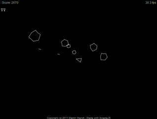
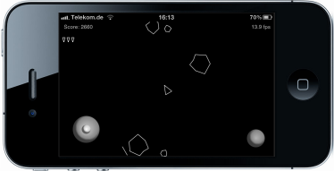

Overview
jsAsteroids is a clone of a famous arcade game written in 1979.
It was created as a demo for the open source game engine
arcade.js.
This game requires HTML5 support, namely <canvas> and <audio>.
Therefore it will not run on Internet Explorer <= 8.
It was tested however with Firefox 3.6, Chrome 8, Safari 5, iPod 3, and
iPhone 4 and seems to run. Only sound is a bit flakey.
Usage
The goal of this game is remove asteroids floating around.
Conrols
Use [Up], [Left], and [Right] keys to move
the player's rocket. Press [Space] to fire.
Note that there are no breaks: you have to turn by 180° and accelerate
instead.
The game is over, when the all three rockets are lost.

Play jsAsteroids on iPod / iPhone
Touch controls (iPod / iPhone)
Use the joystick to at the lower left corner to move and accelerate. Touch
the lower right button to fire.
Play this iPhone/iPod version:
